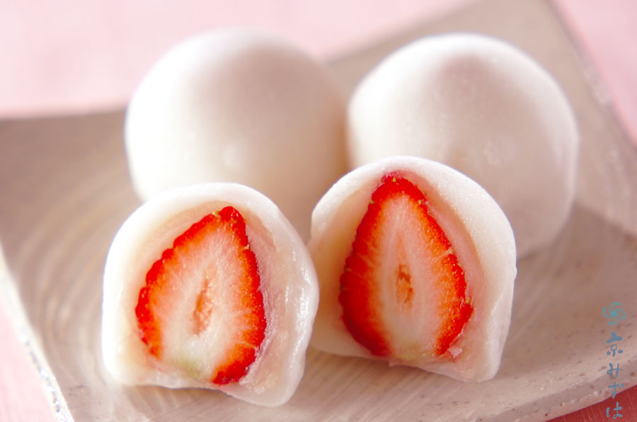
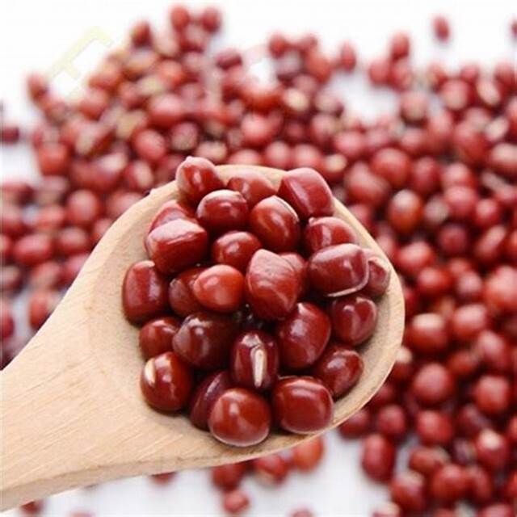
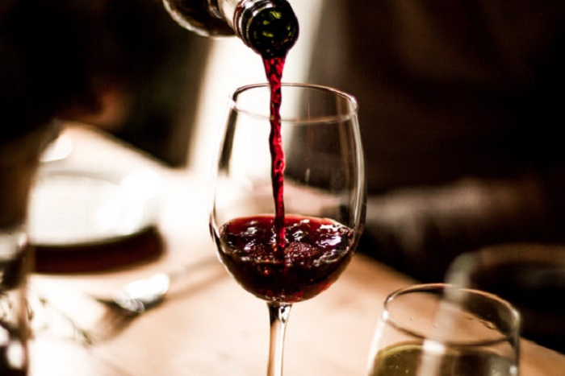
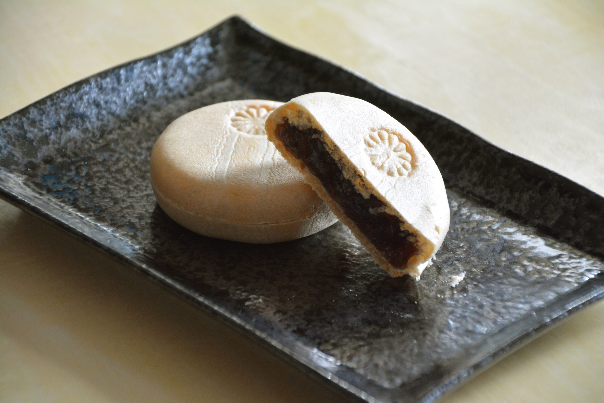
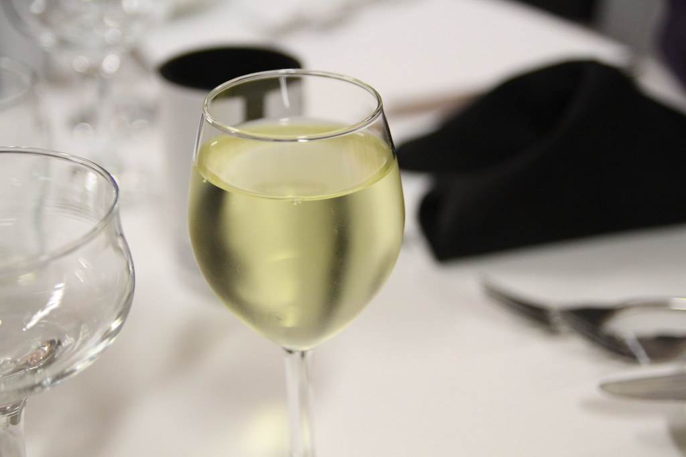
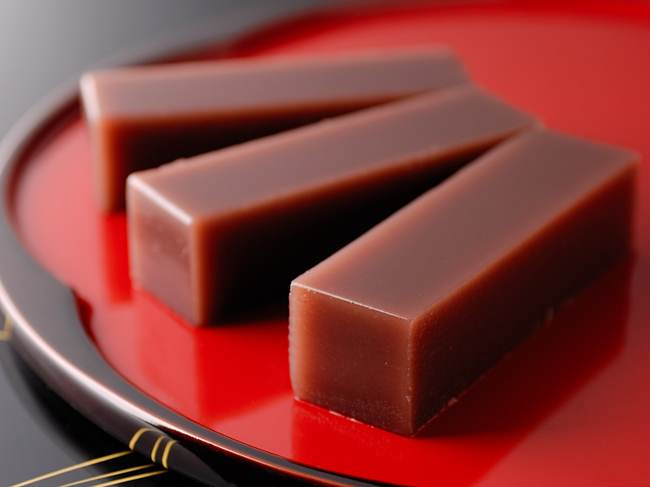
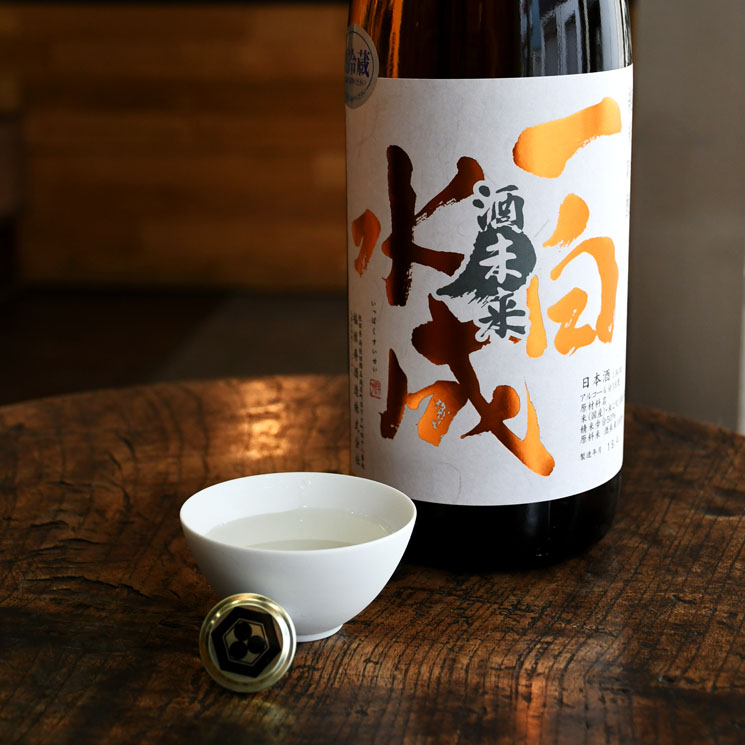
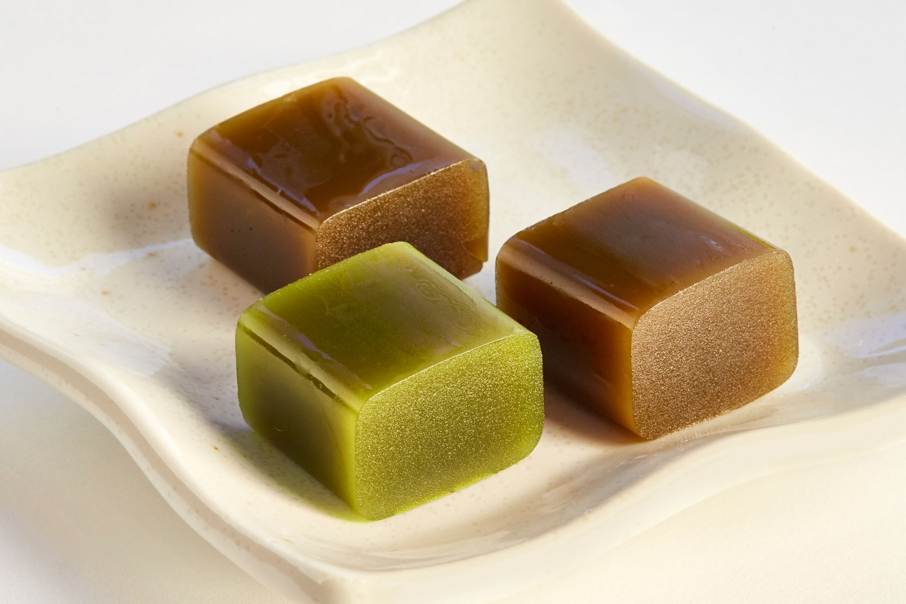

お問い合わせ
お電話でのお問い合わせ
甘美堂佐倉店 TEL:047-321-4567
甘美堂志津店 TEL:047-567-7654
最近よくいただくご質問
-
・大福の賞味期限はどの位ですか？
大福は生菓子ですので開封したらその日のうちにいただいてください。
・和菓子は健康に良いのでしょうか？
和菓子は主な原材料が小豆・砂糖・小麦粉・米粉などで、いずれも脂分が少ないので、

カロリーが低くヘルシーです。
でもおいしさに負けて食べ過ぎには気をつけましょう。・ワインに合う和菓子のおすすめは何ですか？
おすすめは最中と甘くないボルドーの赤ワインです。
また水ようかんは爽やかな甘さの白ワインとぴったりです。  ・日本酒によく合う和菓子のおすすめは？
甘みのある羊羹は吟醸酒ととても相性ばつぐんです。
 